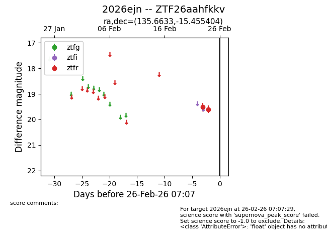
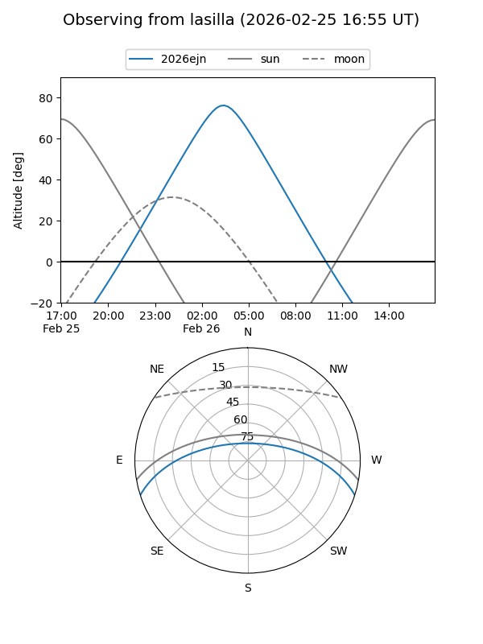
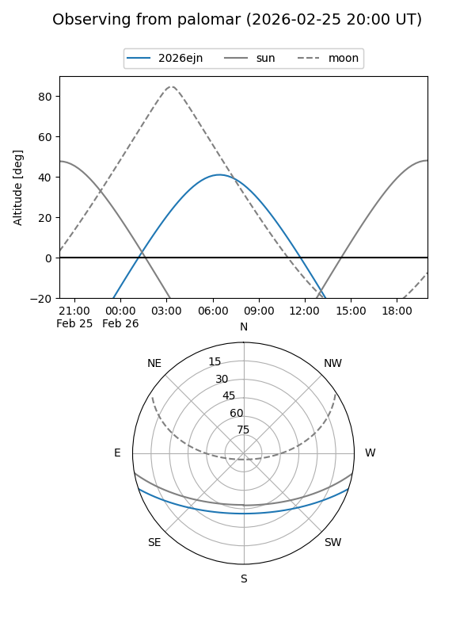

2026ejn
Target 2026ejn at 2026-02-26 07:08
Aliases and brokers:
FINK: link
Lasair: link
ALeRCE: link
TNS: link
YSE: link
alt names
ZTF26aahfkkv (ztf,fink_ztf)
2026ejn (tns,yse)
Coordinates:
equatorial (ra, dec) = 135.6633,-15.45540
equatorial (HMS+DMS) = 09:02:39.20,-15:27:19.45
galactic (l, b) = (243.3304,+20.07282)
Flags:
Photometry:
last ztfr=19.60
2 ztfr detections
Lightcurve

Visibility


Additional plots